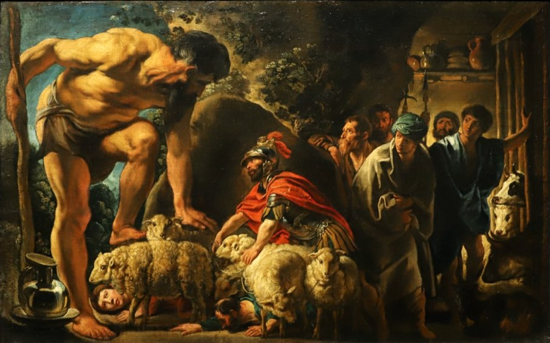

Antes de empezar
La desinencia dice quién habla
1 · La desinencia personal
La desinencia personal (DP) es la terminación que indica la persona y el número del verbo. Mismo verbo, en las dos lenguas: navegar / navigare.
En latín la 1ª del singular a veces termina en ‑m: sum (soy).
Tanto el latín como el castellano son lenguas pro-drop: el sujeto puede no aparecer (sujeto desinencial). La DP dice quién habla.
2 · Las preguntas
Imago
Ulises en la cueva de Polifemo
Jordaens, Ulises en la cueva de Polifemo. Al tocar cada número se marca una parte de la escena y aparece, debajo de la imagen, la palabra latina con su enunciado. Recordá que si la imagen se ve muy chiquita podés hacer zoom.
Troia
Mirá quién habla: ¿1ª, 2ª o 3ª persona?
Una escena por vez. Cada globo dice quién habla. Primero, leer el latín y pensar qué persona corresponde; después, mirar la traducción para decidir. Recordá que si la imagen se ve muy chiquita podés hacer zoom.
Antes de Polifemo
Los pronombres personales
En castellano me y te son objeto directo y también objeto indirecto. En latín son dos formas distintas:
acusativo (objeto directo): Te amo (te amo) · te servare volo (quiero salvarte)
dativo (objeto indirecto): Hoc filum tibi do (te doy este hilo) · Cur mihi auxilium das? (¿por qué me ayudás?)
Con cum pegada al final: mecum (conmigo) · tecum (con vos).
Dativo posesivo. Con el verbo sum, el dativo indica quién tiene algo: Minos filiam habet = Minoi filia est (literalmente, «para Minos hay una hija»: Minos tiene una hija). Lo mismo con los pronombres: mihi («para mí» → mi / tengo), tibi («para vos» → tu / tenés).
Polyphemus
Del castellano al latín
Armar en latín lo que dice cada globo, palabra por palabra: la palabra resaltada en castellano es la que sigue. En la imagen, un recuadro marca quién habla. Entre las fichas hay algunas en otra persona.

Ithaca
Pregunta y respuesta
Una escena por vez: falta la respuesta. Elegir, entre las fichas, la frase que completa el globo vacío. Atención a la persona del verbo. Recordá que si la imagen se ve muy chiquita podés hacer zoom.
Antes de Dédalo
El pretérito perfecto tiene desinencias propias
En el pretérito perfecto, las desinencias personales son otras: ‑i, ‑isti, ‑it, ‑imus, ‑istis, ‑erunt.
mutav‑i (cambié) · mutav‑isti (cambiaste) · mutav‑it (cambió)
Comparadas con el presente: mut‑o (cambio) · muta‑s (cambias) · muta‑t (cambia).
Del relato: Vela nigra non mutavi! (¡No cambié las velas negras!)
Daedalus
La desinencia personal en el diálogo
Una frase por vez; el recuadro verde marca quién habla. Presente y perfecto en la misma frase. Primero, leer el latín y pensar quién habla y cuándo pasa; después, mirar la traducción para decidir. Recordá que si la imagen se ve muy chiquita podés hacer zoom.
Quis loquitur?
Teseo y Ariadna
Una frase por vez: aparece un globo sin dueño. Leer la frase y tocar en la imagen a quien la dice; el globo queda apuntando a esa persona. La persona del verbo y los pronombres son la pista. Recordá que si la imagen se ve muy chiquita podés hacer zoom.
Antes de enviar
¿Cómo te resultó la actividad?
Esto es para mejorar el material — no afecta tu recorrido. Los dos campos de texto son obligatorios (podés escribir "me fue igual que en el anterior" si no tenés más para agregar, pero no pueden quedar vacíos).